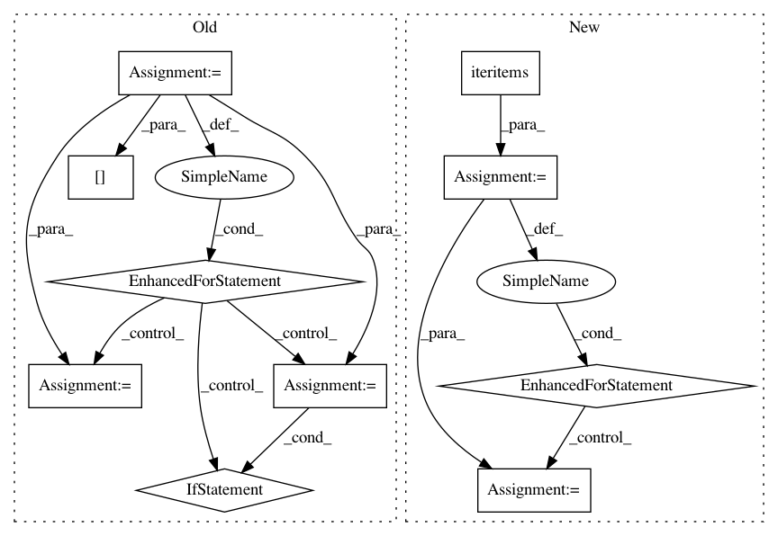

7f007ac656dc5d24606f06544d11dc50748324ef,nilmtk/pipeline/energynode.py,EnergyNode,process,#EnergyNode#Any#Any#,25
Before Change
df.results = getattr(df, "results", {})
energy = {}
for ac_type in AC_TYPES:
energy_measurement = Energy(ac_type)
power_measurement = Power(ac_type)
if energy_measurement in df.columns:
energy[ac_type] = df[energy_measurement].sum()
elif power_measurement in df.columns:
energy[ac_type] = _energy_per_power_series(
df[power_measurement])
energy_results.append(df.timeframe, **energy)
df.results[self.name] = energy_results
return df
After Change
df.results = getattr(df, "results", {})
energy = {}
for measurement, series in df.iteritems():
if isinstance(measurement, Power):
_energy = _energy_per_power_series(series)
elif isinstance(measurement, Energy):
if measurement.cumulative:
_energy = series.iloc[-1] - series.iloc[0]
else:
_energy = series.sum()
else:
continue
energy[measurement.ac_type] = _energy
energy_results.append(df.timeframe, energy)
df.results[self.name] = energy_results
return df
In pattern: SUPERPATTERN
Frequency: 3
Non-data size: 10
Instances
Project Name: nilmtk/nilmtk
Commit Name: 7f007ac656dc5d24606f06544d11dc50748324ef
Time: 2014-05-01
Author: jack-list@xlk.org.uk
File Name: nilmtk/pipeline/energynode.py
Class Name: EnergyNode
Method Name: process
Project Name: googledatalab/pydatalab
Commit Name: 5b48f9a9c097d26d395873044ceaa1a0b886682a
Time: 2017-06-14
Author: brandondutra@google.com
File Name: solutionbox/code_free_ml/mltoolbox/code_free_ml/analyze.py
Class Name:
Method Name: run_cloud_analysis
Project Name: googledatalab/pydatalab
Commit Name: 5b48f9a9c097d26d395873044ceaa1a0b886682a
Time: 2017-06-14
Author: brandondutra@google.com
File Name: solutionbox/code_free_ml/mltoolbox/code_free_ml/analyze.py
Class Name:
Method Name: run_local_analysis